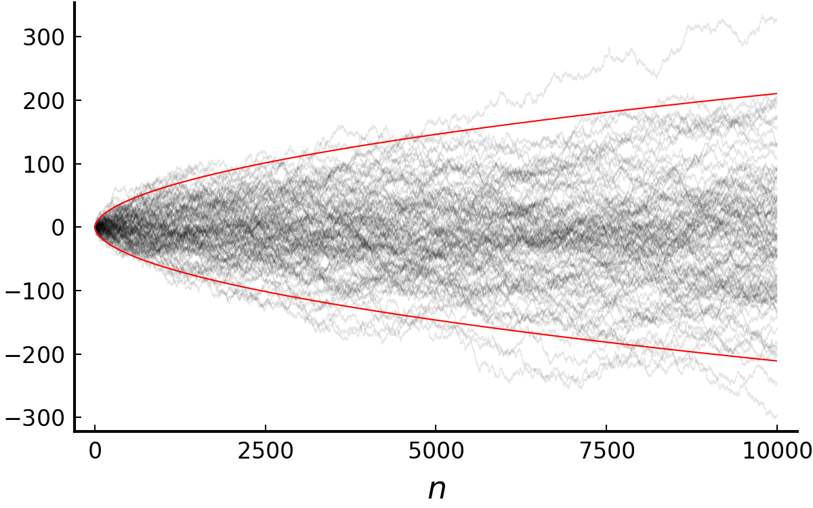

(PTE) 2.4. Strong law of large numbers
Putting together all of the topics we covered so far, we now move on to one of the most impactful theorem in probability theory: the strong law of large numbers (SLLN).
Strong law of large numbers
$E|X_1| = \mu < \infty \implies \frac{S_n}{n} \to \mu \text{ a.s.}$
The strong law not only requires less conditions (pairwise rather than mutual independence) than the weak law but provides convergence in almost sure sense. We use the proof scheme similar to that of (2.3.9). In addition, the Cesàro’s mean will be used: if $\lim_k Y_k = a$ then $\lim_n \frac{1}{n} \sum_{k=1}^n Y_k = a.$
(Step 1. Claim: $|\frac{T_n}{n} - \frac{ET_n}{n}| \to 0 \text{ a.s.} \implies \frac{S_n}{n} \to \mu \text{ a.s.}$)
(i) $\sum_{k=1}^\infty P(X_k > k) \le EX_1 < \infty.$ By the first Borel-Cantelli lemma, $P(X_k>k \text{ i.o.}) = P(X_k \ne Y_k \text{ i.o.}) = 0$ and $X_k \ne Y_k$ for at most finitely many $k$'s. Thus there exists $R$ such that $|T_n - S_n| \le R < \infty$ almost surely for all $n$ and $|\frac{T_n}{n}-\frac{S_n}{n}| \to 0 \text{ a.s.}$ as $n \to \infty.$
(ii) $\frac{ET_n}{n} = \frac{1}{n} \sum_{k=1}^n EY_k$ and $\lim_k EY_k = EX_1 = \mu$ by MCT. By the Cesàro mean, $\frac{ET_n}{n} \to \mu.$
Combine (i) and (ii) and the claim is proved.
(Step 2. $\exists k(n)$ s.t. $|\frac{T_{k(n)}}{k(n)} - \frac{ET_{k(n)}}{k(n)}| \to 0 \text{ a.s.}$)
$$ \begin{align} &\;\;\;\;P\left(\vert\frac{T_{k(n)}}{k(n)} - \frac{ET_{k(n)}}{k(n)}\vert > \epsilon\right) \\ &\le \frac{1}{\epsilon^2 k(n)^2} \text{Var}(T_{k(n)}) \\ &= \frac{1}{\epsilon^2 k(n)^2} \sum\limits_{m=1}^{k(n)} \text{Var}(Y_m) \end{align} $$ We want the sum of probabilities $$ \begin{align} &\;\;\;\;\sum\limits_{n=1}^\infty P\left(\vert\frac{T_{k(n)}}{k(n)} - \frac{ET_{k(n)}}{k(n)}\vert > \epsilon\right) \\ &\le \frac{1}{\epsilon^2} \sum\limits_{n=1}^\infty \frac{1}{k(n)^2} \sum\limits_{m=1}^{k(n)} \text{Var}(Y_m) \\ &= \frac{1}{\epsilon^2} \sum\limits_{m=1}^\infty \text{Var}(Y_m) \sum\limits_{n:k(n)\ge m} \frac{1}{k(n)^2} \end{align} $$ to be finite. Let $k(n) = \lfloor \alpha^n \rfloor$ for $\alpha > 1$ then since $\lfloor \alpha^n \rfloor \ge \frac{1}{2} \alpha^n$, $$ \begin{align} &\;\;\;\;\sum\limits_{n:k(n)\ge m} \frac{1}{k(n)^2} \\ &=\sum\limits_{n:k(n)\ge m} \frac{1}{\lfloor \alpha^n \rfloor^2} \\ &\le 4 \sum\limits_{n:k(n)\ge m} \alpha^{-2n} \\ &\le \frac{4}{m^2 (1-\alpha^{-2})} \approx \frac{c}{m^2}. \end{align} $$ In order to show finiteness of the sum, we need to show $\sum_{k=1}^\infty \frac{1}{k^2} \text{Var}(Y_k) < \infty.$ This comes from $$ \begin{align} \text{Var}(Y_k) &\le EY_k^2 = \int_0^k 2y P(X_1 > y) dy. \\ \sum\limits_{k=1}^\infty \frac{1}{k^2} \text{Var}(Y_k) &\le \sum\limits_{k=1}^\infty \frac{1}{k^2} \int_0^k 2y P(X_1 > y) dy \\ &= \int_0^\infty \left( \sum\limits_{k=1}^\infty \frac{1}{k^2} \mathbf{1}_{(y<k)} \right) 2y P(X_1 > y) dy \\ &\le 4EX_1 < \infty. \end{align} $$ The last inequality holds because $$ \begin{align} \sum\limits_{k:k>y} \frac{1}{k^2} 2y &= 2y\sum\limits_{k:k\ge \lfloor y \rfloor + 1} \frac{1}{k^2} \\ &\le 2y \int_{\lfloor y \rfloor}^\infty \frac{1}{x^2} dx \\ &= \frac{2y}{\lfloor y \rfloor} \le 4. \end{align} $$ Hence $|\frac{T_{k(n)}}{k(n)} - \frac{ET_{k(n)}}{k(n)}| \to 0 \text{ a.s.}$
(Step 3. sandwich)
$T_{k(n)} \le T_m \le T_{k(n+1)}$ for $m:~ k(n) \le m \le k(n+1).$ Since $k(n) \to \infty$, every $m\in\mathbb{N}$ has a $k(n)$ and $k(n+1)$ that sandwiches $m.$ As $n \to \infty$, $\frac{k(n)}{k(n+1)} = \frac{\lfloor \alpha^n \rfloor}{\lfloor \alpha^{n+1} \rfloor} \to \frac{1}{\alpha}.$ Take $\liminf$ and $\limsup$ to each sides of $$ \frac{T_{k(n)}}{k(n+1)} \le \frac{T_m}{m} \le \frac{T_{k(n+1)}}{k(n)} $$ and we get $$ \frac{1}{\alpha}\mu \le \liminf\limits_m\frac{T_m}{m} \le \limsup\limits_m\frac{T_m}{m} \le \alpha\mu \;\;\text{a.s.},~ \forall \alpha > 1. $$ Since $\alpha$ was arbitrary, $\alpha \to 1$ then the proof is done.
Application of the strong law
I would like to cover three important results that follow the strong law. The first example is about extending the theorem for the case where $EX_1 = \infty.$ The second will be about a simple form of renewal theory. The last will be the foundation of the theory of empirical processes: the Glivenko-Cantelli theorem. In addition to the results, I will mention the law of iterated logarithm, which is not named in the textbook, but quite useful to know for the following section of martingales.
1. Extension of the strong law
$\implies \frac{S_n}{n} \to \infty \text{ a.s.}$
This implies the strong law holds even if $EX_1$ is infinite.
It suffices to show that $\sum_{i=1}^n X_i^+/n \to \infty$ a.s. Let $Y_i^m = X_i^+ \mathbf{1}_{(X_i^+ \le m)}$ so that $Y_i^m$'s be i.i.d. and integrable. By SLLN, $\sum_{i=1}^n X_i^+ / n \ge \sum_{i=1}^n Y_i^m \to EY_1^m$ a.s. By MCT, $EY_1^m \uparrow EX_1^+ = \infty$ as $m \uparrow \infty.$
2. Renewal theory
The following theorem is about a simple version of Renewal theory arose from the question: How frequently should the light bulbs be exchanged to a new one? We are interested in the rate of the number of lightbulbs go out until the time $t$ versus $t$. Intuitively we can guess that it would be one over the mean lifetime of a bulb. The theorem confirms it.
Let $T_n = X_1+\cdots+X_n$, $N_t = \sup\{n:~ T_n \le t\}.$
$\implies \frac{N_t}{t} \to \frac{1}{\mu} \text{ a.s.}$
Here, $X_i$ can be thought of as the lifetime of $i$th lightbulb and $N_t$ as the number of bulbs went out until the time $t$. We regard $1/\mu = \infty$ if $\mu = 0.$
$T_n/n \to \mu$ a.s. by SLLN. Observe that $T_{N_t} \le t \le T_{N_t+1}.$ As $t \to \infty$, $N_t \to \infty$ a.s. and $\frac{N_t+1}{N_t} \to 1$ a.s. Taking $\lim_{t\to\infty}$ on each terms of $$ \frac{T_{N_t}}{N_t+1} \le \frac{t}{N_t} \le \frac{T_{N_t+1}}{N_t} $$ we get the result we want.
3. Glivenko-Cantelli theorem
Let $F_n(x) = \frac{1}{n} \sum_{k=1}^n \mathbf{1}_{(X_k \le x)}.$
$\implies \sup_x |F_n(x) - F(x)| \to 0 \text{ a.s. as } n \to \infty$
The theorem states that as the number of independent observations grow, the empirical distribution approaches to the (unknown) population distribution almost surely.
(1) pointwise convergence
For a fixed $x\in\mathbb{R}$, $F_x(x) \to F(x)$ a.s. Let $Z_n = \mathbf{1}_{(X_n < x)}$ then $F_n(x^-)=\sum_{k=1}n Z_k \to F(x^-)$ a.s.
(2) uniform convergence at grid points
Let $x_{jk} = \inf\{y:~ F(y) \ge j/k\}$, $1\le j\le k-1$, $x_{0k} = -\infty$, $x_{kk} = \infty.$ By (1), for each $k$ there exists $N_k \in\mathbb{N}$ such that if $n\ge N_k$ then $|F_n(x_{jk}) - F(x_{jk})| < 1/k$ and $|F_n(x_{jk}^-) - F(x_{jk}^-)| < 1/k$ for all $1 \le j \le k-1.$
(3) uniform convergence
For all $x \in (x_{j-1,k}, x_{jk})$ and $n\ge N_k$, $$ \begin{align} F_n(x) &\le F_n(x_{jk}^-) \le F(x_{jk}^-) + \frac{1}{k} \\ &\le F(x_{j-1,k}) + \frac{2}{k} \le F(x) + \frac{2}{k}. \end{align} $$ Similarly, $F_n(x) \ge F(x) - \frac{2}{k}.$ Hence the desired result follows.
4. Law of iterated logarithm
I will finish this section by briefly stating the law.
This gives us not only the asymptotic rate of $S_n$ but also the intuition that such random walk, regardless of its distribution, fluctuates between the values $\pm \sqrt{2n\log\log n}.$ As noted in Wikipedia, it bridges the gap between the law of large numbers (which is about $\frac{S_n}{n}$) and the central limit theorem ($\frac{S_n}{\sqrt{n}}$).

Black: 100 trials of $(S_n)$. Red: $\pm\sqrt{2n\log\log n}$.
Acknowledgement
This post series is based on the textbook Probability: Theory and Examples, 5th edition (Durrett, 2019) and the lecture at Seoul National University, Republic of Korea (instructor: Prof. Johan Lim).
»(PTE) 2.3. Borel-Cantelli lemmas
In this section I would like to cover the Borel-Cantelli lemmas, or B-C lemmas for short. Borel-Cantelli lemmas are quintessential tools for analysis of tail events and deriving almost sure convergence from $P$-convergence.
Limit of a sequence of sets
Borel-Cantelli lemmas are statements about probability of “limit” of sets. To state and prove the lemma, we first define $\limsup$ and $\liminf$ of a sequence of sets.
Let $(A_n)_{n\in\mathbb{N}}$ be a sequence of sets.
$\limsup\limits_n A_n = \bigcap_n \bigcup_{k\ge n} A_k = \{A_n \text{ i.o.}\}.$
$\liminf\limits_n A_n = \bigcup_n \bigcap_{k\ge n} A_k = \{A_n \text{ eventually}\}.$
i.o. stands for “infinitely often”. We named these $\limsup, \liminf$ since there is a connection with those of functions. It is not difficult to show that $\limsup\limits_n \mathbf{1}_{A_n} = \mathbf{1}_{\limsup\limits_n A_n}$ and $\liminf\limits_n \mathbf{1}_{A_n} = \mathbf{1}_{\liminf\limits_n A_n}.$ As a remark, by de Morgan’s law, $\{A_n \text{ i.o.}\}^c = \{ A_n^c \text{ eventually} \}$ thus $P(A_n \text{ i.o.}) = 0$ is equivalent to $P(A_n^c \text{ eventually}) = 1.$
Borel-Cantelli lemmas
(ii) If $A_n$'s are independent, $\sum\limits_{n=1}^\infty P(A_n) = \infty \implies P(A_n \text{ i.o.}) = 1.$
(i) $\sum\limits_{k=1}^n \mathbf{1}_{A_k} \uparrow \sum\limits_{n=1}^\infty \mathbf{1}_{A_n}$. By MCT $E\sum\limits_{n=1}^\infty \mathbf{1}_{A_n} = \sum\limits_{n=1}^\infty P(A_n) < \infty$ which leads to $\sum\limits_{n=1}^\infty \mathbf{1}_{A_n} < \infty$ a.s.
(ii) Using the inequality $1-x \le e^{-x}$, \begin{align*} P(\bigcap\limits_{k \geq m}{A_k}^c) &= \prod\limits_{k \geq m}\big( 1-P({A_k}) \big) \\ &\leq \prod\limits_{k \geq m}e^{-P(A_k)} = e^{-\sum\limits_{k \geq m} P(A_k)} = 0, \:\: \forall m>0 \end{align*} $\therefore P(\bigcup\limits_{k \geq m}{A_k}) = 1$ and $P(\limsup\limits_n{A_n}) = P(A_n \text{ i.o.}) = 1.$
Using Borel-Cantelli lemmas, we can convert the sum of probabilities to probability of tail events.
Tail events and the 0-1 law
I mentioned tail events several times but never actually defined it.
Simply put, a tail event is an event that does not depend on finite number of random variables. For instance, $\{ \limsup_n S_n/C_n > x \} \in \mathcal{T}$ for $C_n, x \in \mathbb{R}$, $S_n=X_1 + \cdots + X_n$ if $X_n\to_n\infty$ while $\{\limsup_n S_n > 0\}\notin\mathcal{T}.$
The next theorem implies that Borel-Cantelli lemmas are converses of each other.
$\therefore A \in \mathcal{T} \to P(A) = P(A \cap A) = P(A)P(A)$.
Application of Borel-Cantelli lemmas
Application of the first lemma
The first application connects convergence in probability to almost sure convergence.
($\Rightarrow$) Without loss of generality, we only have to prove that there exists a.s. convergent subsequence. Let $\epsilon_k>0$, $\epsilon_k \downarrow 0.$ There exists $n_k \in \mathbb{N}$ such that if $n \ge n_k$, $P(|X_n - X| > \epsilon_k) < \frac{1}{2^k}$ and $n_{k+1} > n_k.$ Hence $\sum\limits_{k=1}^\infty P(|X_{n_k} - X| \ge \epsilon_k) \le 1 < \infty$ and by the first Borel-Cantelli lemma, $P(|X_{n_k} - X| \ge \epsilon_k \text{ i.o.}) = 0.$
($\Leftarrow$) It is easy to show that for a sequence $(y_n)$ on a topological space, if for all subsequence there exists a further subsequence that converges to $y$, then $y_n \to y.$ Given $\delta > 0$, let $y_n = P(|X_n - X| > \delta)$ then it is a sequence on topological space $\mathbb{R}$ that converges to 0. By the condition, the result directly follows.
Another application is in the form of strong law of large numbers.
$$ \begin{align} P(|S_n/n - \mu| > \epsilon) &= P(|S_n - n\mu| > n\epsilon) \\ &\le E(S_n - n\mu)^4 / n^4\epsilon^4 \le C / n^2\epsilon^4. \end{align} $$ $\sum\limits_{n=1}^\infty P(|S_n/n - \mu| > \epsilon) \le \sum\limits_{n=1}^\infty C_1 / n^2 < \infty$ for some $C_1.$ By the first Borel-Cantelli lemma, the result follows.
Application of the second lemma
As a sneak peek of the next sction, the second Borel-Cantelli lemma leads to a necessary condition of the strong law of large numbers.
$\begin{align} \implies &\text{(i) } P(|X_1|\ge n \text{ i.o.}) = 1. \\ &\text{(ii) } P(\lim_n S_n/n \text{ exists and finite}) = 0. \end{align}$
Note that this implies $E|X_1| < \infty$ is required for the strong law.
(i) $E|X_1| = \int_0^\infty P(|X_1|>x)dx \le \sum\limits_{n=0}^\infty P(|X_1| \ge n) = \infty.$ By the second B-C lemma, $P(|X_1| \ge n \text{ i.o.}) = 1.$
(ii) $\frac{S_n}{n}-\frac{S_{n+1}}{n+1} = \frac{S_n}{n(n+1)}-\frac{X_{n+1}}{n+1}.$ Let $C = \{\lim_n S_n/n \text{ exists and finite}\}$, then on $C$, $\lim_n \frac{S_n}{n(n+1)} = 0.$ On $C \cap (|X_i| \ge n \text{ i.o.})$, $$ \begin{align} \limsup\limits_n |\frac{S_n}{n}-\frac{S_{n+1}}{n+1}| &= \limsup\limits_n |\frac{S_n}{n(n+1)}-\frac{X_{n+1}}{n+1}| \\ &\ge \limsup\limits_n |\frac{X_{n+1}}{n+1}| - \cancelto{0}{\lim_n |\frac{S_n}{n(n+1)}|} \ge 1. \end{align} $$ By (i), the desired result follows.
Generalization of the second lemma
Another important result is a generalization of the lemma.
$\sum\limits_{n=1}^\infty P(A_n) = \infty \implies \frac{\sum_{m=1}^n \mathbf{1}_{A_m}}{\sum_{m=1}^n P(A_m)}\to 1 \text{ a.s.}$
Let $X_m = 1_{A_m}$, $S_n = X_1 + \cdots + X_n$. Note that $0 \le X_m \le 1.$
(Step 1: $\frac{\sum_{m=1}^n \mathbf{1}_{A_m}}{\sum_{m=1}^n P(A_m)} = \frac{S_n}{ES_n} \overset{P}{\to} 1.$)
$EX_n^2 = P(\mathbf{1}_{A_n}) < \infty.$ Thus $ES_n^2 = \sum_{i=1}^n EX_n^2 + 2\sum_{1\le i < j \le n}EX_i EX_j < \infty.$ $$ \begin{align} P(|\frac{S_n - ES_n}{ES_n}| > \epsilon) &\le \frac{\text{Var}(S_n)}{\epsilon^2(ES_n)^2} \\ &\le \frac{\sum_{i=1}^n EX_i^2}{\epsilon^2(ES_n)^2} \\ &= \frac{\sum_{i=1}^n EX_i}{\epsilon^2(ES_n)^2} \\ &= \frac{1}{\epsilon^2 ES_n} \to 0. \end{align} $$ (Step 2: $\exists n_k$ s.t. $\frac{S_{n_k}}{ES_{n_k}} \to 1 \text{ a.s.}$)
Let $n_k = \inf\{n:~ ES_n > k^2\}$ and $T_k = S_{n_k}$, then $k^2 \le ET_k \le (k+1)^2.$ Since $P(|\frac{T_k - ET_k}{ET_k}| > \delta) \le \frac{1}{\delta^2 ET_k} \le \frac{1}{\delta^2 k^2}$, $\sum_k P(|\frac{T_k - ET_k}{ET_k}| > \delta) \le \sum_k \frac{1}{k^2} / \delta^2 < \infty.$ By the first Borel-Cantelli lemma, $P(|\frac{T_k - ET_k}{ET_k}| > \delta \text{ i.o.}) = 0$, hence $\frac{T_k}{ET_k} \to 1$ a.s.
(Step 3: sandwich)
Let $\Omega_0 = \{\lim_k \frac{T_k}{ET_k} = 1\}$, then $P(\Omega_0) = 1.$ Pick $\omega \in \Omega_0$. Because $S_n$ is non-decreasing, for all $n$ there exists $k$ such that $T_k \le S_n \le T_{k+1}$ and $ET_k \le ES_n \le ET_{k+1}$ and thus $\frac{T_k(\omega)}{ET_{k+1}} \le \frac{S_n(\omega)}{ES_n} \le \frac{T_{k+1}(\omega)}{ET_k}.$ Since $\frac{T_k(\omega)}{ET_k} \to 1$ a.s. and $k^2 \le ET_k \le ET_{k+1} \le (k+2)^2$, by sandwich theorem $\frac{S_n(\omega)}{ES_n} \to 1$ and we get the result.
As well as its implication, the proof scheme of it is important as it is used to prove almost sure convergence of bounded random variables in the form of fractions.
Acknowledgement
This post series is based on the textbook Probability: Theory and Examples, 5th edition (Durrett, 2019) and the lecture at Seoul National University, Republic of Korea (instructor: Prof. Johan Lim).
(TBD: example - head runs)
»(PTE) 2.2. Weak laws of large numbers
We say a random variable $X_n$ converges in probability (or $P$-converges) to another random variable $X$ and write $X_n \overset{P}{\to} X$ if $\lim_n P(|X_n - X| > \epsilon) = 0$ for all $\epsilon >0.$ We can also define convergence in probability to a constant by letting $X = c\in\mathbb{R}$. It is easy yet useful to know that $X_n \overset{L^p}{\to} X$ with $p > 0$ implies $X_n \overset{P}{\to} X$ by Markov-Chebyshev inequality with $\varphi(x) = |x|^p$.1
Week law of large numbers is about convergence of the sample mean of independent random variables to their expectation in probability. In this section, we cover variants of the week law of large numbers (WLLN), from the simplest $L^2$-WLLN to the most familiar form which only requires $L^1$ condition.
$L^2$ weak law
If $X_n$’s are independent then it is uncorrelated but the converse does not hold. It is also clear that if $X_i$’s are uncorrelated then $\text{Var}(X_1+\cdots+X_n) = \sum_{i=1}^n \text{Var}(X_i).$ Using Chebyshev’s inequality we can easier get our first WLLN for uncorrelated random variables.
By chebyshev's inequality, given $\epsilon > 0$, $$\begin{align} P(|S_n/n - \mu| > \epsilon) \le \text{Var}(S_n/n)/\epsilon^2 \le C/\epsilon^2n \to 0 \end{align} $$ and by definition of variance, $$ E|S_n/n - \mu|^2 = \text{Var}(S_n/n) \le C/n \to 0. $$
An example of $L^2$ weak law is in high-dimensional problem.
Theorem 1 requires strong conditions that $X_i$’s should have the same expectation and their variance should be uniformly bounded. Theorem 2 relieves these so that the result could be more useful.
$\frac{\sigma_n^2}{b_n^2} \to_n 0 \implies \frac{S_n - \mu_n}{b_n} \overset{P}{\to} 0.$
$\sigma_n^2 / b_n^2 = E\left(\frac{S_n - \mu_n}{b_n}\right)^2 \to 0.$
This can be used in any kind of sequence of random variable $(S_n)_{n\in\mathbb{N}}$. (Even the uncorrelatedness is not required!)
Weak law for triangular arrays
Many topics in probability theory concerns triangular arrays $(X_{nk})_{1\le k \le n}$ such that $X_{nk}$, $k=1,\cdots,n$ are independent (row-wise independent). We are interested in limiting behaviors of row-wise sum $S_n := X_{n1} + \cdots + X_{nn}$.
To deal with the case where the finite second moment condition is not ensured, we introduce truncated random variables.
$\bar X := X\mathbf{1}_{(|X| \le M)} = \begin{cases} X &,~ \text{if } |X| \le M \\ 0 &,~ \text{otherwise} \end{cases}$
By ignoring the tail part of $X$, truncated random variable $\bar X$ always has finite moments.
Let $b_n > 0$, $b_n \to_n \infty$.
Define $\bar X_{nk} := X_{nk} \mathbf{1}_{(|X_{nk}| \le b_n)}.$
(i) $\sum_{k=1}^n P(|X_{nk}| > b_n) \to_n 0.$
(ii) $\frac{1}{b_n^2} \sum_{k=1}^n E\bar X_{nk}^2 \to_n 0.$
$\implies \frac{S_n - a_n}{b_n} \overset{P}{\to} 0$, where $a_n = \sum_{k=1}^n E\bar X_{nk}.$
Let $\bar S_n = \bar X_{n1} + \cdots + \bar X_{nn}$ so that $a_n = E\bar S_n.$ Then for an arbitrary $\epsilon>0$, $P( |\frac{S_n - a_n}{b_n}| > \epsilon) \le \underbrace{P(S_n \ne \bar S_n)}_\text{(i)} + \underbrace{P(|\frac{\bar S_n - a_n}{b_n}| > \epsilon)}_\text{(ii)}.$
For the first part, $$\begin{align} \text{(i)} &\le P(\bigcup\limits_{k=1}^n \{X_{nk} \ne \bar X_{nk}\}) \le \sum\limits_{k=1}^n P(X_{nk} \ne \bar X_{nk}) \\ & = \sum\limits_{k=1}^n P(|X_{nk}| > b_n) \to_n 0 \end{align} $$ and for the latter, $$ \begin{align} \text{(ii)} &\le E(\frac{\bar S_n - a_n}{b_n})^2 / \epsilon^2 \le \text{Var}(\bar S_n) / \epsilon^2b_n^2 \\ &= \sum\limits_{k=1}^n \text{Var}(\bar S_n) / \epsilon^2b_n^2 \\ &= \sum\limits_{k=1}^n E\bar X_{nk}^2 / \epsilon^2b_n^2 \to_n 0 \end{align} $$ $\therefore P(|\frac{S_n - a_n}{b_n}| > \epsilon) \to_n 0$ for all $\epsilon >0.$
Weak law of large numbers
Result for triangular arrays paves the way for general weak law of large numbers. Before we get to it, let’s take a look at a highly useful lemma.
$\implies EY^p = \int_0^\infty py^{p-1} P(Y > y) dy.$
$$ \begin{align} \int_0^\infty py^{p-1} P(Y > y) dy &= \int_0^\infty \int_{(Y>y)} py^{p-1} dP dy \\ &= \int_\Omega \int_0^Y py^{p-1} dy dP \\ &= \int_\Omega Y^p dP = EY^p. \end{align} $$ The second equality comes from the Fubini's theorem.
$x P(|X_i| > x) \to 0$ as $x \to \infty.$
$\implies S_n/n - \mu_n \overset{P}{\to} 0$ where $\mu_n = EX_1 \mathbf{1}_{(|X_1|\le n)}.$
Use the weak law for triangular arrays. Let $X_{nk} = X_k$ and $b_n = n.$
(i) $\sum\limits_{i=1}^n P(|X_i| > n) = n P(|X_1| > n) \to_n 0.$
(ii) Let $\bar X_k = X_k\mathbf{1}_{(|X_k|\le n)}.$ Then $\frac{1}{n^2} \sum\limits_{k=1}^n E\bar X_k^2 = \frac{1}{n} E\bar X_1^2.$ By the lemma, $E\bar X_1^2 = \int_0^n 2xP(X_1 > x) dx$ so $\frac{1}{n} E\bar X_1^2 \to 0$ as $x\to\infty.$
By (i) and (ii) and theorem 3, $S_n/n - \mu_n \overset{P}{\to} 0.$
Use this to get the weak law of large numbers.
Let $S_n = X_1 + \cdots X_n$, $\mu = EX_1.$
$\implies S_n/n \overset{P}{\to} \mu.$
(i) $x P(|X_1| > x) = x E\mathbf{1}_{(|X_1| > x)} \le E|X_1|\mathbf{1}_{(|X_1| > x)}.$ Since $|X_1|\mathbf{1}_{(|X_1| > x)} \le |X_1|$ and $E|X_1| < \infty$ by DCT $E|X_1|\mathbf{1}_{(|X_1| > x)} \to 0$ as $x\to\infty.$
(ii) Let $\mu_n = E|X_1|\mathbf{1}_{(|X_1| \le n)}.$ Since $|X_1|\mathbf{1}_{(|X_1| \le n)} \le |X_1|$ and $E|X_1| < \infty$ by DCT $E|X_1|\mathbf{1}_{(|X_1| \le n)} \to_n \mu.$
By theorem 5, $S_n/n - \mu_n \overset{P}{\to} 0$. Since $\mu_n \overset{P}{\to} \mu$, the desired result follows.
Note that we do not need finite second moment condition.
While I will leave other examples as further readings, I would like to discuss the example of coupon collector’s problem (example 2.2.7).
Here, $\mathcal{U}\{1,2,\cdots,n\}$ is a discrete uniform distribution from one to $n$. In this example it can be interpreted that $n$ is the total number of different coupons and $\tau_k^n$ represents the number of trials until $k$ different kinds of coupons are collected, $T_n$ is the number of trials until all of the coupons are collected. This example says that asymptotically $n\log n$ trials are required for all $n$ coupons to be collected. Likewise, asymptotic rate of a stochastic process can be calculated using the weak laws.
Let $b_n = n\log n$ then it satisfies the condition of theorem 2.
Acknowledgement
This post series is based on the textbook Probability: Theory and Examples, 5th edition (Durrett, 2019) and the lecture at Seoul National University, Republic of Korea (instructor: Prof. Johan Lim).
-
Relationship between $L^p$ convergence, convergence in probability, almost sure convergence will be covered later in detail. ↩